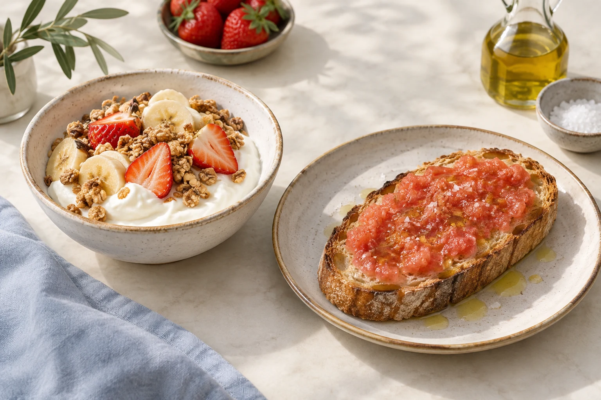

01
Bowls
Açai bowl
9.50 €
02
Tostas
Extras: aguacate, jamón ibérico o salmón +2,50 €; huevo ECO o bacon +1,80 €; pan sin gluten (no apto celíacos) +1 €.
TORREMOLINOS · MEDITERRÁNEO
Camino del Sanatorio Marítimo 3
Bienvenidos · Welcome · Bienvenue
Ver la carta · View menu ↓